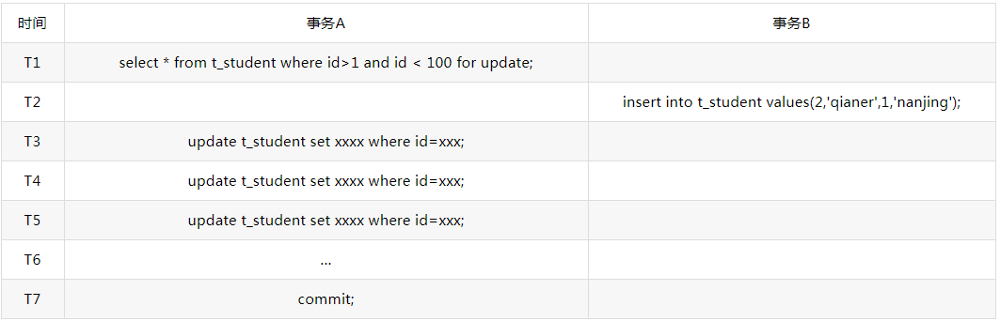

MySQL 共享锁、排他锁、悲观锁、乐观锁¶
一、相关名词
|--表级锁（锁定整个表）
|--页级锁（锁定一页）
|--行级锁（锁定一行）
|--共享锁（S 锁，MyISAM 叫做读锁）
|--排他锁（X 锁，MyISAM 叫做写锁）
|--间隙锁（NEXT-KEY 锁）
|--悲观锁（抽象性，不真实存在这个锁）
|--乐观锁（抽象性，不真实存在这个锁）
二、InnoDB 与 MyISAM
Mysql 在 5.5 之前默认使用 MyISAM 存储引擎，之后使用 InnoDB 。查看当前存储引擎：
MyISAM 操作数据都是使用的表锁，你更新一条记录就要锁整个表，导致性能较低，并发不高。当然同时它也不会存在死锁问题。
而 InnoDB 与 MyISAM 的最大不同有两点： 一是 InnoDB 支持事务；二是 InnoDB 采用了行级锁。也就是你需要修改哪行，就可以只锁定哪行。
在 Mysql 中，行级锁并不是直接锁记录，而是锁索引。索引分为主键索引和非主键索引两种，如果一条 sql 语句操作了主键索引，Mysql 就会锁定这条主键索引；如果一条语句操作了非主键索引，MySQL 会先锁定该非主键索引，再锁定相关的主键索引。
InnoDB 行锁是通过给索引项加锁实现的，如果没有索引，InnoDB 会通过隐藏的聚簇索引来对记录加锁。也就是说：如果不通过索引条件检索数据，那么 InnoDB 将对表中所有数据加锁，实际效果跟表锁一样。因为没有了索引，找到某一条记录就得扫描全表，要扫描全表，就得锁定表。三、共享锁与排他锁 1.首先说明：数据库的 增删改 操作默认都会加 排他锁，而查询不会加任何锁。
mysql InnoDB 引擎默认的修改数据语句，update,delete,insert 都会自动给涉及到的数据加上 排他锁，select 语句默认不会加任何锁类型，如果加排他锁可以使用 select ...for update 语句，加共享锁可以使用 select ... lock in share mode 语句。所以加过排他锁的数据行在其他事务种是不能修改数据的，也不能通过 for update 和 lock in share mode 锁的方式查询数据，但可以直接通过 select ...from...查询数据，因为普通查询没有任何锁机制。
共享锁 ：对某一资源加共享锁，自身可以读该资源，其他人也可以读该资源（也可以再继续加共享锁，即 共享锁可多个共存），但无法修改。要想修改就必须等所有共享锁都释放完之后。语法为：
排他锁 ：对某一资源加排他锁，自身可以进行增删改查，其他人无法进行任何操作。语法为：
2.下面援引例子说明 （援自：http://blog.csdn.net/samjustin1/article/details/52210125）：
这里用 T1 代表一个数据库执行请求，T2 代表另一个请求，也可以理解为 T1 为一个线程，T2 为另一个线程。
例 1：
T1: select * from table lock in share mode（假设查询会花很长时间，下面的例子也都这么假设）
T2: update table set column1='hello'
过程：
T1 运行（并加共享锁)
T2 运行
if T1 还没执行完
T2 等......
else 锁被释放
T2 执行
end if
T2 之所以要等，是因为 T2 在执行 update 前，试图对 table 表加一个排他锁，而数据库规定同一资源上不能同时共存共享锁和排他锁。所以 T2 必须等 T1 执行完，释放了共享锁，才能加上排他锁，然后才能开始执行 update 语句。
例 2：
T1: select * from table lock in share mode
T2: select * from table lock in share mode
这里 T2 不用等待 T1 执行完，而是可以马上执行。
分析：
T1 运行，则 table 被加锁，比如叫 lockA，T2 运行，再对 table 加一个共享锁，比如叫 lockB，两个锁是可以同时存在于同一资源上的（比如同一个表上）。这被称为共享锁与共享锁兼容。这意味着共享锁不阻止其它人同时读资源，但阻止其它人修改资源。
例 3：
T1: select * from table lock in share mode
T2: select * from table lock in share mode
T3: update table set column1='hello'
T2 不用等 T1 运行完就能运行，T3 却要等 T1 和 T2 都运行完才能运行。因为 T3 必须等 T1 和 T2 的共享锁全部释放才能进行加排他锁然后执行 update 操作。
例 4 （死锁的发生）：
T1:begin tran
T2:begin tran
假设 T1 和 T2 同时达到 select，T1 对 table 加共享锁，T2 也对 table 加共享锁，当 T1 的 select 执行完，准备执行 update 时，根据锁机制，T1 的共享锁需要升级到排他锁才能执行接下来的 update。在升级排他锁前，必须等 table 上的其它共享锁（T2）释放，同理，T2 也在等 T1 的共享锁释放。于是死锁产生了。
例 5：
T1:begin tran
T2:begin tran
这种语句虽然最为常见，很多人觉得它有机会产生死锁，但实际上要看情况
|--如果 id 是主键（默认有主键索引），那么 T1 会一下子找到该条记录(id=10 的记录），然后对该条记录加排他锁，T2，同样，一下子通过索引定位到记录，然后对 id=20 的记录加排他锁，这样 T1 和 T2 各更新各的，互不影响。T2 也不需要等。
|--如果 id 是普通的一列，没有索引。那么当 T1 对 id=10 这一行加排他锁后，T2 为了找到 id=20，需要对全表扫描。但因为 T1 已经为一条记录加了排他锁，导致 T2 的全表扫描进行不下去（其实是因为 T1 加了排他锁，数据库默认会为该表加意向锁，T2 要扫描全表，就得等该意向锁释放，也就是 T1 执行完成），就导致 T2 等待。
死锁怎么解决呢？一种办法是，如下：
例 6：
T1:begin tran
T2:begin tran
这样，当 T1 的 select 执行时，直接对表加上了排他锁，T2 在执行 select 时，就需要等 T1 事物完全执行完才能执行。排除了死锁发生。但当第三个 user 过来想执行一个查询语句时，也因为排他锁的存在而不得不等待，第四个、第五个 user 也会因此而等待。在大并发情况下，让大家等待显得性能就太友好了。
所以，有些数据库这里引入了更新锁（如 Mssql，注意：Mysql 不存在更新锁）。
例 7：
T1:begin tran
T2:begin tran
更新锁其实就可以看成排他锁的一种变形，只是它也允许其他人读（并且还允许加共享锁）。但不允许其他操作，除非我释放了更新锁。T1 执行 select，加更新锁。T2 运行，准备加更新锁，但发现已经有一个更新锁在那儿了，只好等。当后来有 user3、user4...需要查询 table 表中的数据时，并不会因为 T1 的 select 在执行就被阻塞，照样能查询，相比起例 6，这提高了效率。
后面还有意向锁和计划锁：
计划锁，和程序员关系不大，就没去了解。 意向锁（innodb 特有）分意向共享锁和意向排他锁。 意向共享锁：表示事务获取行共享锁时，必须先得获取该表的意向共享锁； 意向排他锁：表示事务获取行排他锁时，必须先得获取该表的意向排他锁； 我们知道，如果要对整个表加锁，需保证该表内目前不存在任何锁。
因此，如果需要对整个表加锁，那么就可以根据：检查意向锁是否被占用，来知道表内目前是否存在共享锁或排他锁了。而不需要再一行行地去检查每一行是否被加锁。
四、乐观锁与悲观锁
首先说明，乐观锁和悲观锁都是针对读（select）来说的。
案例：
某商品，用户购买后库存数应-1，而某两个或多个用户同时购买，此时三个执行程序均同时读得库存为“n”，之后进行了一些操作，最后将均执行 update table set 库存数=n-1，那么，很显然这是错误的。
解决：
使用悲观锁（其实说白了也就是排他锁）
|-- 程序 A 在查询库存数时使用排他锁（select * from table where id=10 for update）
|-- 然后进行后续的操作，包括更新库存数，最后提交事务。
|-- 程序 B 在查询库存数时，如果 A 还未释放排他锁，它将等待……
|-- 程序 C 同 B…… 使用乐观锁（靠表设计和代码来实现）
|-- 一般是在该商品表添加 version 版本字段或者 timestamp 时间戳字段
|-- 程序 A 查询后，执行更新变成了： update table set num=num-1 where id=10 and version=23
这样，保证了修改的数据是和它查询出来的数据是一致的（其他执行程序肯定未进行修改）。当然，如果更新失败，表示在更新操作之前，有其他执行程序已经更新了该库存数，那么就可以尝试重试来保证更新成功。为了尽可能避免更新失败，可以合理调整重试次数（阿里巴巴开发手册规定重试次数不低于三次）。 总结：对于以上，可以看得出来乐观锁和悲观锁的区别：
悲观锁实际使用了排他锁来实现（select **** for update）。文章开头说到，innodb 加行锁的前提是：必须是通过索引条件来检索数据，否则会切换为表锁。
因此，悲观锁在未通过索引条件检索数据时，会锁定整张表。导致其他程序不允许“加锁的查询操作”，影响吞吐。故如果在查询居多的情况下，推荐使用乐观锁。
“加锁的查询操作”：加过排他锁的数据行在其他事务中是不能修改的，也不能通过 for update 或 lock in share mode 的加锁方式查询，但可以直接通过 select ...from...查询数据，因为普通查询没有任何锁机制。 乐观锁更新有可能会失败，甚至是更新几次都失败，这是有风险的。所以如果写入居多，对吞吐要求不高，可使用悲观锁。 也就是一句话： 读用乐观锁，写用悲观锁。
间隙锁 1.什么叫间隙锁 当我们用范围条件而不是相等条件检索数据，并请求共享或排他锁时，InnoDB 会给符合条件的已有数据记录的索引项加锁；对于键值在条件范围内但不存在的记录，叫做“间隙(GAP)”，InnoDB 也会对这个“间隙”加锁，这种锁机制就是所谓的间隙锁(NEXT-KEY)锁。
2.间隙锁的产生 上面的文字很抽象，现在举个栗子，介绍间隙锁是怎么产生的：
假设有以下表 t_student：（其中 id 为 PK，name 为非唯一索引） 
这个时候我们发出一条这样的加锁 sql 语句：
select id,name from t_student where id > 0 and id \< 5 for update;
这时候，我们命中的数据为以下着色部分：
{kind=link}
细心的朋友可能就会发现，这里缺少了条 id 为 2 的记录，我们的重点就在这里。
select ... for update 这条语句，是会对数据记录加锁的，这里因为命中了索引，加的是行锁。从数据记录来看，这里排它锁锁住数据是 id 为 1、3 和 4 的这 3 条数据。
但是，看看前面我们的介绍——对于键值在条件范围内但不存在的记录，叫做“间隙(GAP)”，InnoDB 也会对这个“间隙”加锁。
好了，我们这里，键值在条件范围但是不存在的记录，就是 id 为 2 的记录，这里会对 id 为 2 数据加上间隙锁。假设这时候如果有 id=2 的记录 insert 进来了，是要等到这个事务结束以后才会执行的
3.间隙锁的作用 总的来说，有 2 个作用：防止幻读和防止数据误删/改
(1)防止幻读 关于幻读的概念可以参考这篇文章 https://blog.csdn.net/mweibiao/article/details/80805031 ，这里就不多做解释了
假设有下面场景

如果没有间隙锁，事务 A 在 T1 和 T4 读到的结果是不一样的，有了间隙锁，读的就是一样的了
(2)防止数据误删/改¶
这个作用比较重要，假设以下场景：
{kind=link}
这种情况下，如果没有间隙锁，会出现的问题是：id 为 2 的记录，刚加进去，就被删除了，这种情况有时候对业务，是致命性的打击。加了间隙锁之后，由于 insert 语句要等待事务 A 执行完之后释放锁，避免了这种情况
4.使用间隙锁的隐患 最大的隐患就是性能问题
前面提到，假设这时候如果有 id=2 的记录 insert 进来了，是要等到这个事务结束以后才会执行的，假设是这种场景 
{kind=link}
这种情况，对插入的性能就有很大影响了，必须等到事务结束才能进行插入，性能大打折扣
更有甚者，如果间隙锁出现死锁的情况下，会更隐晦，更难定位 怎样避免死锁
1、以固定的顺序访问表和行。比如两个更新数据的事务，事务 A 更新数据的顺序 为 1，2；事务 B 更新数据的顺序为 2，1。这样更可能会造成死锁。
2、大事务拆小。大事务更倾向于死锁，如果业务允许，将大事务拆小。
3、在同一个事务中，尽可能做到一次锁定所需要的所有资源，减少死锁概率。
4、降低隔离级别。如果业务允许，将隔离级别调低也是较好的选择，比如将隔离级别从 RR 调整为 RC，可以避免掉很多因为 gap 锁造成的死锁。
5、为表添加合理的索引。可以看到如果不走索引将会为表的每一行记录添加上锁，死锁的概率大大增大。